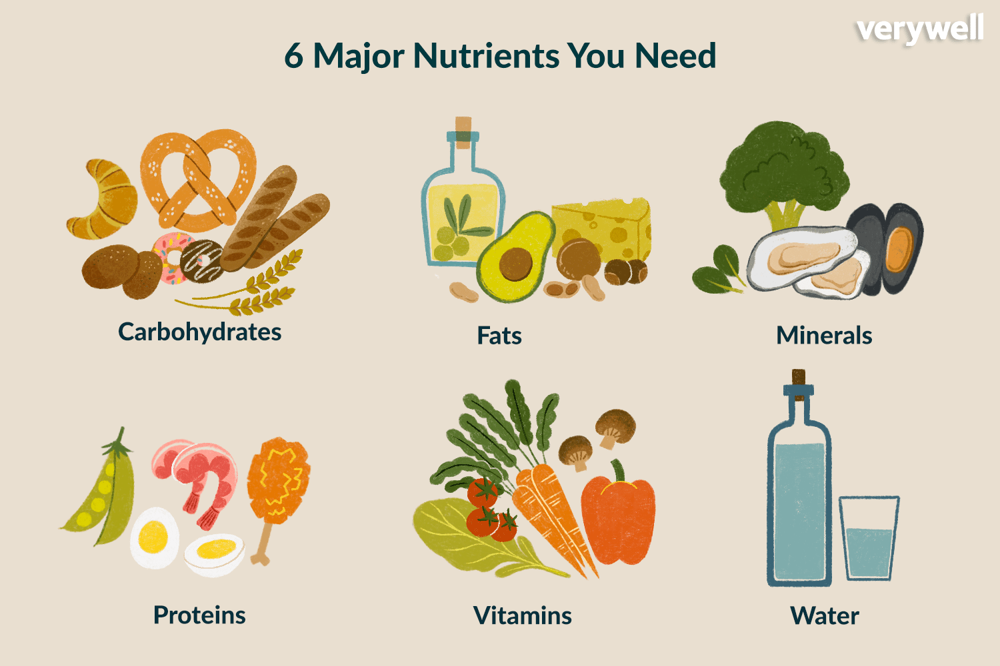

Know your Nutrition
What's in your food?
Food is usually made of one or more items. Each item contains lot of components for the body to function properly.A balanced diet should include a wide variety of nutrients and other food components. From protein to polyphenols, fat to folate, it is the combination of these components that lead to good health and well-being.
What are the different types of nutrients?
There are six major nutrients – water, carbohydrates, protein, fat, vitamins, and minerals.
Vitamins: Although needed in much smaller amounts than the previous nutrients, vitamins are essential for your body to function. Each vitamin works as part of a different process in your body, helping make your metabolism, growth, and development, or immune system (among many other functions) work properly. Vitamins are classified as water-soluble (B complex vitamins and vitamin C) or fat-soluble (vitamins A, D, E, & K).
Minerals: Minerals are elements (think the periodic table from chemistry) that are also essential for our bodies to function. Some minerals are used for metabolic processes and others are used as part of body structures, like calcium in our bones and teeth.
Fat: Fat is our most concentrated source of energy, providing double the amount of calories per gram. Fat is how our bodies store extra calories for later use. Despite this less desirable function, fats are important to health in other processes, too.
Protein: Protein is made of amino acids, which are the building blocks of our tissues. Protein in our diet is used for growth, repair, and maintenance of body tissue.
Carbohydrates:Carbohydrates (carbs for short) are the main sources of energy in our body. In our body, blood sugar is the fuel that powers cells. Carbohydrates can be simple (easy to digest) in the form of sugar or complex (more difficult to digest) in the form of starch or fiber.
Water: Water makes up 45-75% of our bodies and is important for good health. Water is used in different body processes and helps to regulate our temperature.